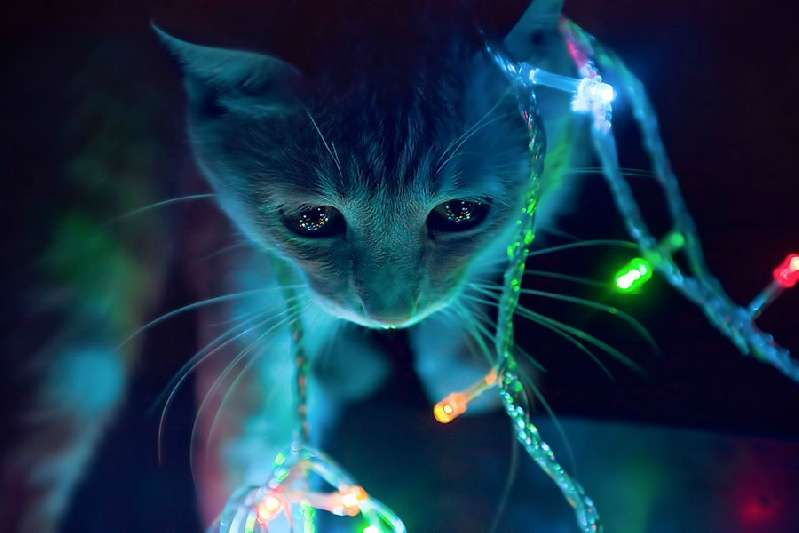

Fakta Unik Kucing

Kontak mata
Kucing berkedip dan menyipitkan mata saat tidak sengaja melakukan kontak mata. Maka, untuk mengakrabi kucing yang tidak dikenal, sebuah trik bisa dilakukan oleh pecinta kucing. Caranya,
kedipkan mata dan pandanglah matanya.
Selalu tidur siang
Kucing lebih suka tidur siang daripada tidur malam. Tetapi jika mereka cukup rileks untuk memasuki tidur yang lebih dalam, mereka menghasilkan pola gelombang otak yang sama seperti yang kita lakukan ketika kita bermimpi.
Membersihkan gigi dengan daging
Memberi kucing Anda sepotong daging mentah setiap hari untuk dikunyah akan menjaga gusi dan giginya dalam kondisi baik. Daging yang cocok termasuk unggas, kelinci, atau daging sapi yang telah dikalengkan.
Menyukai sinar matahari
Apakah Anda menyadari bahwa kucing menyukai matahari? Jika kucing Anda tampaknya dapat mentolerir panas dengan sangat baik, ini karena ‘nenek moyang’ kucing pada awalnya adalah hewan yang hidup di padang pasir.